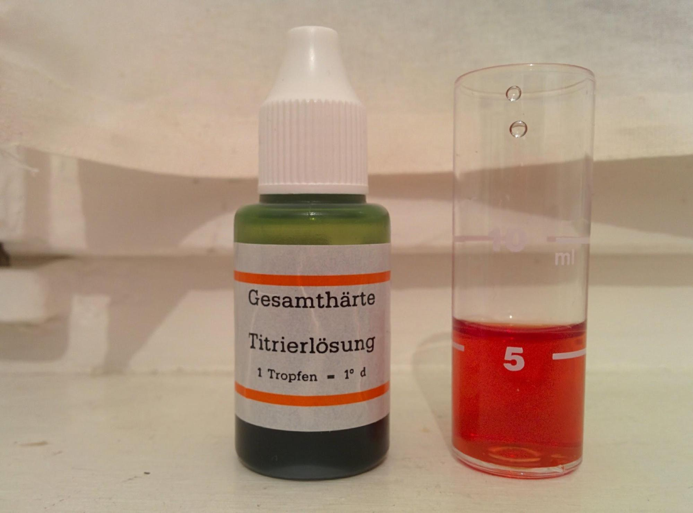

Experiments
Table of Contents
Water hardness test
Overview
I tested with the following product of water filter, comparing to Tube water (control group).
- BRITA Classic type
- PearlCo
Test environment
As a environment we use a water case from PearlCo and this reagent for water hardness.
Test protocol is as follows :
- Repeat followings for each group
- Fill out test tube with filtered water to 5 [ml] mark
- Add titration solution drop by drop the while swirling test tube
- Count drops until color changes from RED to GREEN
- Since 1 drop of reagent express 1 degree dH (see the measurement), calculate each hardness.
Result
The following result shows color and water types.
| Drop count | Tube water | BRITA | PearlCo |
|---|---|---|---|
| 0 | |||
| 1 | SKIP | ||
| 2 |  |
||
| 3 | SKIP | ||
| 4 | |||
| 5 | SKIP | ||
| 6 | |||
| 7 | SKIP | ||
| 8 | SKIP | ||
| 9 |  | ||
| 10 | |||
| 11 | |||
| 12 | |||
| 13 | |||
| 14 |
The result shows Tube water is 14, BRITA is 8 and PealCo is 4. According to this Hard-soft classification table, each shows “Very hard”, “Hard” and “Moderately hard”.
Conclusioin
Since I use water from the same environment, I should use PearlCo as long as I want to avoid drinking hard water.
I cannot rule out the following possibility just by this trial: It's combination of a filter and water pot that decides effect of water filtering.
Given we express (water pot, water filter), we can show the result as (PearlCo, PearlCo) > (PearlCo, BRITA). But it's not clear at all whether (BRITA, BRITA) > (PearlCo, PearlCo), or vice versa.